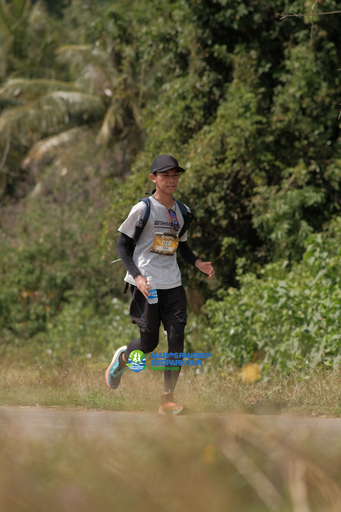
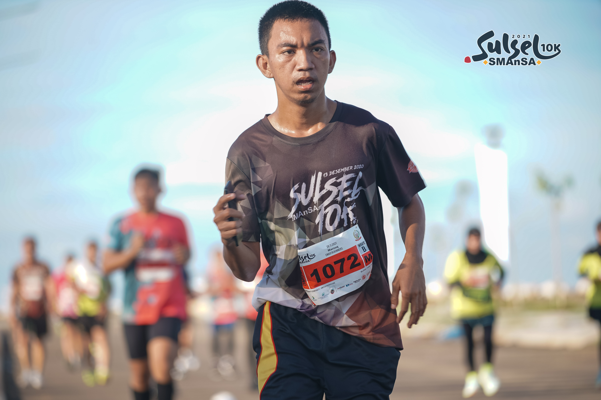

Komunitas lari asal Sulawesi Selatan yang fokus dalam
pengembangan minat dan bakat pemuda lokal di bidang lari jarak jauh
SEJARAH
Komunitas EMGOTA Runners
Komunitas EMGOTA Runners merupakan singkatan dari Enrekang,
Makassar, Gowa, dan Takalar yang merupakan asal kabupaten dari para pendiri
EMGOTA Runners. Komunitas yang berisikan para pemuda-pemudi yang memiliki hobi
di bidang lari jarak jauh dan berkeinginan kuat menjadi yang terbaik. Komunitas
ini pada awalnya terbentuk karena keisengan dari para anggotanya yang disatukan
oleh hobi namun dipisahkan oleh jarak. Tak ingin jarak menjadi hambatan, mereka
pun membentuk komunitas yang menaungi mereka, EMGOTA Runners.
Semakin waktu berjalan komunitas ini pun semakin berkembang
dengan segudang pengalaman lomba yang mereka miliki. Terhitung sudah lebih dari
10 event lomba yang komunitas ini ikuti. Dan dari event yang mereka ikuti itu,
mereka mulai menampakkan tajinya kepada komunitas-komunitas lain. Bahkan
komunitas ini pernah mengirimkan 3 perwakilannya pada event exhibisi
Maros-Pangkep GeoparkRun yang membuat komunitas ini semakin diakui oleh
atlet-atlet lainnya.
VISI & MISI
VISI
Menjadikan lari bukan sekadar olahraga namun sebagai gaya hidup.
MISI
Menyelenggarakan kegiatan latihan rutin bersama.
Mengikuti perlombaan berskala nasional maupun internasional.
Mengembangkan kemampuan fisik yang menunjang daya tahan.
Menjadikan anggota Emgota Runners sebagai generasi unggul abdi negara


ANGGOTA
Komunitas EMGOTA Runners
Terhitung dua tahun terbentuk, Komunitas EMGOTA Runners telah memiliki 19 anggota
dari berbagai kabupaten di provinsi Sulawesi Selatan. Anggota komunitas ini
bukan hanya pria, namun terdapat juga beberapa wanita hebat yang memiliki
passion di bidang atletik. Mereka semua berkumpul bersama di dalam sebuah
komunitas untuk mengekspesikan minat dan bakat mereka agar dapat menorehkan
prestasi yang membanggakan.
Ketua komunitas EMGOTA Runners saat ini yaitu Muhammad Zulfadhli, seorang
mahasiswa Universitas Negeri Makassar jurusan Statistika. Meskipun memiliki
fokus utama di jurusan statistika, namun beliau tetap menjadikan lari sebagai
bagian penting dalam hidupnya dan berharap agar kelak dapat menorehkan prestasi
di bidang atletik walaupun bukan keahliannya. Ketua EMGOTA Runners juga berharap
agar kelak komunitas ini dapat berkembang pesat dan dikenal sampai ke
mancanegara.
REGISTER
Jika tertarik dengan kami, silahkan hubungi kontak berikut: